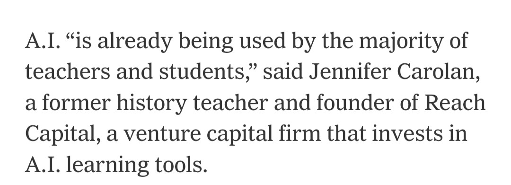
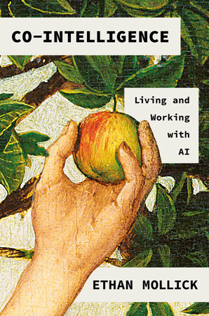
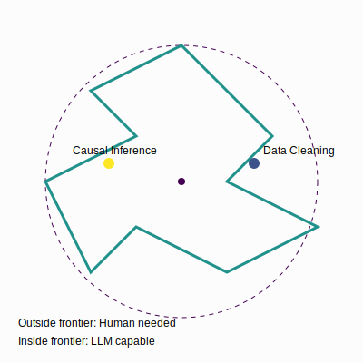
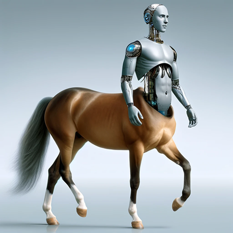
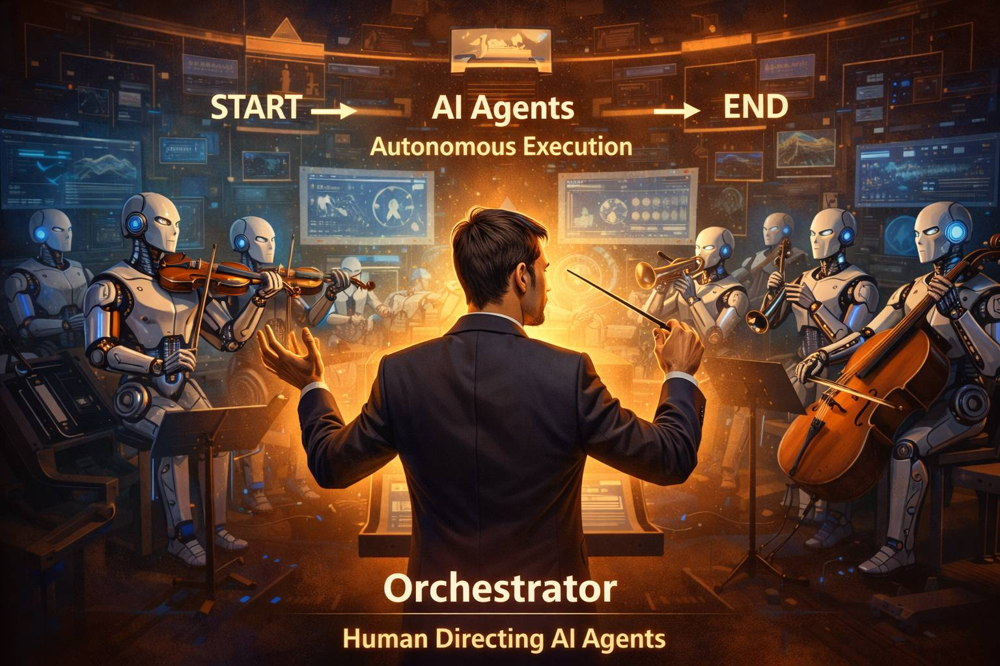
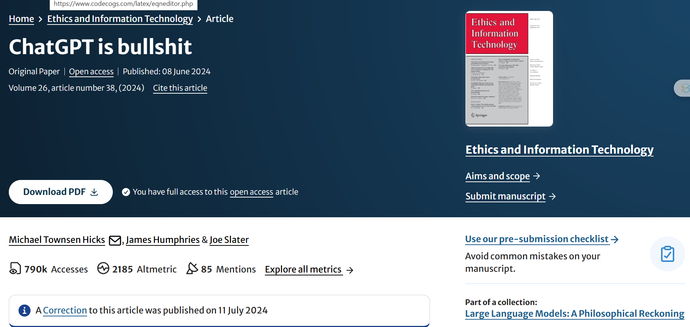
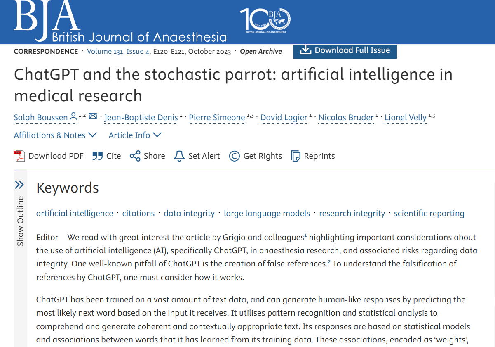
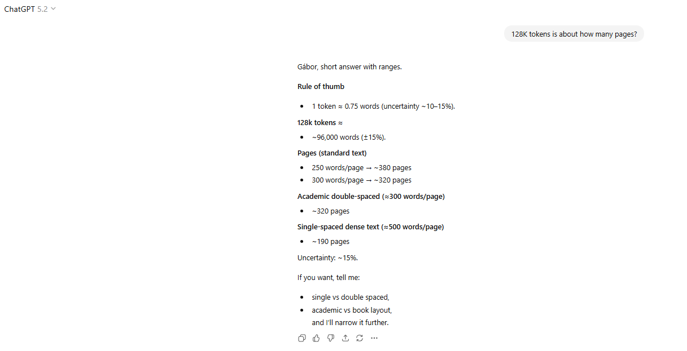
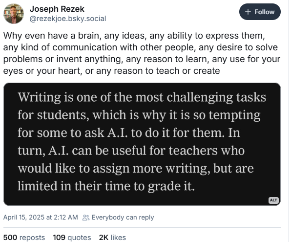
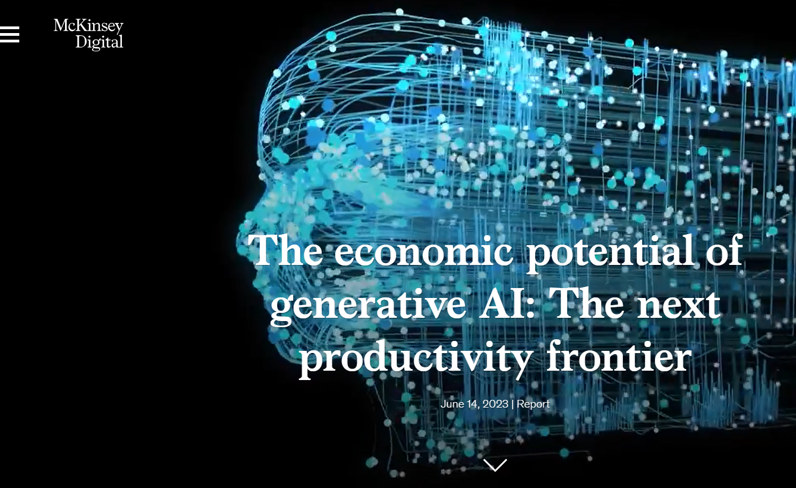

Data Analysis with AI: Concepts
Large Language Models: Key Concepts
2026-01-12
Data Analysis with AI

About me and this slideshow
- I am an economist and not an AI developer, expert, guru, evangelist
- I am an active AI user in teaching and research
- I teach a series a Data Analysis courses based on my textbook
- This project is closely related to concepts and material in the book, but can be consumed alone. (or with a drink)
- This slideshow was created to help students and instructors active in data analysis in education, research, public policy or business
- Enjoy.
Hello
Use of Artificial Intelligence
Why
Teaching Data Analysis courses + prepping for 2nd edition of Data Analysis textbook
This is a class to
- discuss and share ideas of use
- gain experience and confidence
- find useful use cases
- learn bit more about LLMs and their impact
Try out different ways to approach a problem
This class – approach
- focus on data analysis steps: research question, code, statistics, reporting
- move from execution as key skill to design and debugging
- (extra) talk about topics I care about in data analysis
This class – self-help
- AI is both amazing help and scary as SH#T
- self-help group to openly discuss experience and trauma
- get you some experience with selected tasks
- get you a class you can put into your CV
Data Analysis with AI 1 – topics and case studies
- Week 1: Review LLMs – An FT graph
- Week 2: EDA and data documentation – World Values Survey (VWS)
- Week 3: Analysis and report creation – World Values Survey (VWS)
- Week 4: Data manipulation, wrangling – Synthetic Hotels
- Week 5: Text analysis and information extraction – Post match interviews (VWS)
- Week 6: Different ways of sentiment analysis – Post match interviews (VWS)
Data Analysis with AI 2 – topics and case studies
(in progress)
- Week 7: Better coding with AI
- Week 8: SQL like natural language query in a data warehouse
- Week 9: AI as research companion 1: Control variables
- Week 10: AI as research companion 2: Instrumental Variables
- Week 11: AI as research companion 3: Difference in differences
- Week 12: TBD
Data Analysis with AI 1 – Applications and focus eareas
- Chat – conversational interface
- Data Analysis – direct code execution / shared canvases
- Context window management
- Tools to connect to sources (Github, Google drive)
- Talk to AI via API calls
Data Analysis with AI 2 (next course) – Applications and focus eareas
- skills and context management
- “my system prompt” (user specific)
- skills use and generation (gems / prompt template): gabors exploratory data analysis skill (sharable)
- deep research
- Gemini CLI / Claude Code
- MCP (connect to folders on your computer)
- vibe coding an app: the-human-sql-translator
Intro to the concept of LLMs
This class is not an LLM class
Many great resources available online.
This is the best I have seen:
3blue1brown Neural Network series
Assignment: watch them all.
LLM Development Timeline: From text to LLM
LLM Development Timeline: LLM variants and improvements
Key Milestones in LLM Development I
Neural Language Models (2003): First successful application of neural networks to language modeling, establishing the statistical foundations for predicting word sequences based on context.
Word Embeddings (2013): Development of Word2Vec and distributed representations, enabling words to be mapped into vector spaces where semantic relationships are preserved mathematically.
Transformer Architecture (2017): Introduction of the Transformer model with self-attention mechanisms, eliminating sequential computation constraints and enabling efficient parallel processing.
Key Milestones in LLM Development II
Pretraining + Fine-tuning (2018): BERT - Emergence of the two-stage paradigm where models are first pretrained on vast unlabeled text, then fine-tuned for specific downstream tasks.
ChatGPT (2022): Release of a conversational AI interface that demonstrated unprecedented natural language capabilities to the general public, driving mainstream adoption.
Reinforcement Learning from Human Feedback (2023): Refinement of models through human preferences, aligning AI outputs with human values and reducing harmful responses.
References
- [1]: Bengio, Y., Ducharme, R., Vincent, P., & Jauvin, C. (2003). “A Neural Probabilistic Language Model.” Journal of Machine Learning Research.
- [2]: Mikolov, T., Sutskever, I., Chen, K., Corrado, G. S., & Dean, J. (2013). “Distributed Representations of Words and Phrases and their Compositionality.” Advances in Neural Information Processing Systems.
- [3]: Vaswani, A., Shazeer, N., Parmar, N., Uszkoreit, J., Jones, L., Gomez, A. N., Kaiser, L., & Polosukhin, I. (2017). “Attention Is All You Need.” Advances in Neural Information Processing Systems.
- [4]: Devlin, J., Chang, M. W., Lee, K., & Toutanova, K. (2018). “BERT: Pre-training of Deep Bidirectional Transformers for Language Understanding.” arXiv preprint.
- [5]: OpenAI. (2022). “ChatGPT: Optimizing Language Models for Dialogue.” OpenAI Blog.
- [6]: Anthropic. (2023). “Constitutional AI: Harmlessness from AI Feedback.” arXiv preprint.
What are Large Language Models?
- Statistical models predicting next words (tokens)
- Transform text/image/video into mathematical space
- Scale (training data) matters enormously
- Pattern recognition at massive scale
LLMs as Prediction Machines
- Economic Framework: Similar to forecasting models
- Input → Black Box → Predicted Output
- Key Difference: Works with unstructured text data
- Training Process: Supervised learning at scale
- Training Material: “Everything” (all internet + many books)
Context window
1 token = 4 characters, 4 tokens= 3 words (In English)
varies by models
ChatGPT 2022 window of 4,000 tokens.
GPT-5.2 2026 window of 400,000 tokens = 1000p book
Gemini 3 2026 window of 1 million tokens = the whole Harry Potter series
Tokens matter – more context, more relevant answers
Over limit: hallucinate, off-topic.
Context window – the great differentiator
Context window = your chat + uploads + retrieved materials
LLMs work much better with knowledge in context window
Think
Context window: grounded knowledge
Outside: good but often vague recollection + internet search
Inference
Inference means generating output based on input and learned patterns
- LLMs generate text by predicting next tokens based on context
- Quality of inference depends on:
- Model size (parameters)
- Training data
- Fine-tuning methods
- Context window (relevant info)
Reasoning Models (2025 Q4)
- Standard Models (GPT-4o):
- “Fast thinking”. Predicts the next word immediately.
- Good for creative writing, simple queries.
- Reasoning Models (GPT5.2, Gemini 3 Deep Think):
- “Slow thinking”. Generates hidden “thought chains” before the final answer.
- Self-Correction: Can “backtrack” if it detects a logical error.
- Compute-Time Tradeoff: Spending more time/tokens on thinking yields higher accuracy in math/code.
What’s new (2025 Q4)
more will be covered in Data Analysis with AI 2
- Reasoning Standardization: OpenAI and Google have made “reasoning” the default for complex tasks.
- Native Multimodality: No longer “OCR-ing” images. Models “see” the chart pixels directly.
- Agentic Coding: Tools like Cursor, Claude Code have matured
- From Chat to Work Canvas:
- Moving away from linear chat.
- Working in shared artifacts (Canvases, Projects).
Working with LLMs
Cyborgs vs Centaurs
The Centaur and Cyborg Approaches based on Co-Intelligence: Living and Working with AI By Ethan Mollick
Co-Intelligence
The Jagged Frontier of LLM Capabilities
- lot of tasks may be considered to be done by LLM
- Uncertainty re how well LLM will do them – “Jagged Frontier”
- Some unexpectedly easy, others surprisingly hard
- Testing the frontier for data analysis – this class + Data Analysis and AI Lab

Image created Claude.ai
The Centaur Approach
- Clear division between human and LLM tasks
- Strategic task allocation based on strengths
- Human maintains control and oversight
- LLM used as a specialized tool
- Quality through specialization
- Better for high-stakes decisions

Image created in detailed photorealistic style by Ralph Losey with ChatGPT4 Visual Muse version
The Cyborg Approach
- Deep integration between human and LLM
- Continuous interaction and feedback
- Iterative refinement of outputs
- Learning from each interaction
- Faster iteration cycles
- More creative solutions emerge
Image created in detailed photorealistic style by Ralph Losey with ChatGPT4 Visual Muse version
Analysis Approaches: Centaur vs Cyborg
| Stage | Centaur 🧑💻 | Cyborg 🦾 |
|---|---|---|
| Plan | 👤 Design research plan 🤖 Suggest variables |
👤🤖 Interactive brainstorming 👤🤖 Collaborative refinement |
| Data Prep | 👤 Define cleaning rules 🤖 Execute cleaning code 👤 Validate |
👤🤖 Iterative cleaning 👤🤖 Joint discovery and modification |
| Analysis | 👤 Choose methods 🤖 Implement code 👤 Validate results |
👤🤖 Exploratory conversation 👤🤖 Dynamic adjustment 👤🤖 Continuous validation |
| Reporting | 👤 Outline findings 🤖 Draft sections 👤 Finalize |
👤🤖 Co-writing process 👤🤖 Real-time feedback 👤🤖 Iterative improvement |
The Orchestrator Approach (2026)
- Humans define high-level goals and intents (start)
- AI Agents autonomously execute tasks
- Continuous monitoring and adjustment by humans
- Focus on strategy and oversight and review (end)

Image created by ChatGPT 5.2
Evolution of Workflow: From Centaur to Orchestrator
| Era | Model | Role of Human |
|---|---|---|
| 2023-24 | Centaur | doer/checker. Half human, half AI. Human writes code, AI fixes it. |
| 2024-25 | Cyborg | integrated. Constant feedback loop. |
| 2026+ | Orchestrator | manager. Human defines intent, Agents execute, test, and report. |
Prompt(ing): 2023–2025
- In 2023-24, great deal of belief in prompt engineering as skill
- In 2025 there are still useful concepts and ideas 📍 Week 2
- But not many tricks.
- Highly relevant response = provide any important details or context.
Prompting 2026
- Prompting (User Focus):
- Design & Interaction.
- Start general + iterate OR specify strict constraints.
- Context Engineering (Developer Focus):
- Success is about what goes into the context window, not just how you phrase the question.
Practical Guidelines
- Start with clear task boundaries (Centaur)
- Gradually increase integration (Cyborg)
- Many workflows combine both approaches
- Higher stakes = more control
- Always validate critical outputs
- Build experience in AI use 📍 this class
Practical Guidelines (2026)
- Current LLMs are very good but not perfect
- Major gains in coding: AI can write 80-90% of code for standard tasks
- Still some hallucination, errors
- Can now outsource some tasks with light supervision
- Cyborg as well as orchestrator are both in use
- Supervision and review remain critical – management skills
What can go wrong
Stochastic Parrot
Image created in detailed photorealistic style by Ralph Losey with ChatGPT4 Visual Muse version
Stochastic Parrots
Stochastic = when prompted repeatedly, LLMs may give different answers
Parrot = LLMs can repeat information without understanding
Philosophy = to what extent do they understand the state of the world?
Data Analysis
- To what extent running something yields same result? 📍 this class
- How good are predictions? 📍 this class
Hallucination: Prediction Errors
Type I Error (False Positive)
- Generating incorrect but plausible information
- Example: Creating non-existent research citations
Type II Error (False Negative)
- Failing to generate correct information
- Example: Missing key facts in training data
Economic Impact of errors
- Cost of verification (humans, AI), risk assesment
Hallucination of references
- AI suggests references that don’t exist, or facts that are not true
- used to be a big problem. It’s much less now, but still there. will always be
- Newer models trained to prefer truth over plausibility
- Newer models search online for facts
- Content in context window followed strongly
Big debate on errors and hallucination
- Is hallucination and errors inherent or may be improved
- Read Carl T. Bergstrom and C. Brandon Ogbunu: chatgpt isn’t hallucinating it’s bullshitting, 04.06.2023
- Even a paper Michael Townsen Hicks, James Humphries & Joe Slater

The issue is important in medicine
Hallucination is reduced. ChatGPT in 2025 April

Hallucination is reduced. ChatGPT in 2026 January
LLM vs human 2025
- LLM also trained on scientific papers, books
- New methods to improve accuracy
- Solve scientific problems
- Reasoning models, like OpenAI o1 (o3 in Updates)
AI use cases
You have already seen many use cases
Some more ideas
Economics research
- Impact of AI on workers – paper collection (2024-06)
Some business
AI Use Cases: Student response
Same as in 2025 Q2
- Code-related tasks: Used for debugging, finding errors, generating code for visuals/graphs, optimizing code, and explaining code functionality.
- Writing and editing: Used for proofreading, editing writing, generating references/bibliography lists, checking spelling, and for letters
- Information processing: Used for summarising content/information, searching for literature or researchers’ names, and finding sources.
New for 2026 Q1
- Learning and understanding: Used to explain concepts not understood from class, find tutorials for more coverage on topics, address confusion in material, and break down complex assignment texts into clear steps.
- General assistance: Used as a general “assistant” for tasks like thesis work, projects, data analysis, data cleaning, interview preparation, and translation.
How I use it?
Tools
- All the time, ChatGPT 5,2 (Canvas), Claude 4.5 (Projects), Gemini 3.0 all paid tiers.
- I often try around models
- Github Copilot in VSCode and Rstudio (less)
- Experimenting with CLIs
Approach
- Idea generation and development
- Code generation and debugging
- Less so in writing
What were bad experience with AI?
Topics
- Background work
- Coding
- Discussion of topics, results
- …
My bad experience
- AI written text is typically
- Good grammar
- Convincing structure
- Bland and unoriginal
- One paragraph or one page is hard tell apart from a human
- 10 pages, 10 papers – easy to see
Ethich and Law
Copyright
U.S. Copyright Office 2025 Jan report Copyright and Artificial Intelligence Part 2: Copyrightability: copyright protection is intended for human-created works.
Note
“Do not provide sufficient human control to make users of an AI system the authors of the output. Prompts essentially function as instructions that convey unprotectable ideas. While highly detailed prompts could contain the user’s desired expressive elements, at present they do not control how the AI system processes them in generating the output.”
Ethics
AI was created by using (stealing?) human knowledge
- NYT sued OpenAI
Is it Okay to use “Everything” as training material?
- Read essay by Robin Sloan
AI in research
Use of Artificial Intelligence in AER
Note
Artificial intelligence software, such as chatbots or other large language models, may not be listed as an author. If artificial intelligence software was used in the preparation of the manuscript, including drafting or editing text, this must be briefly described during the submission process, which will help us understand how authors are or are not using chatbots or other forms of artificial intelligence. Authors are solely accountable for, and must thoroughly fact-check, outputs created with the help of artificial intelligence software.
AI in research: Elsevier
Two key points from Elsevier policy generative AI policies for journals
- report for transparency
- supervise, take responsibility
Use of Artificial Intelligence in classes
You gotta stay a learning human
Conclusions and discussion
AI is widely adopted in business
 Source: McKinsey Digital
To learn more
- Look at beyond where I collect blog posts, videos, books, papers.
Gabor’s current take I
Should study
- You have to learn stuff even if AI can also do it.
- Good writing
- core coding
- Be a well rounded educated human
- Because to supervise AI you need to know what to look for
Use of AI – need to report?
- My view in 2024. Report what you have done
- My view in 2025. No need to report, AI is now like internet search (or electricity)
Gabor’s current take II
Your place with AI
AI as input, supervision, debugging, responsibility.
Without core knowledge you can’t interact
Strong knowledge and experience helps debugging
Future: more opportunities
- Cheaper data analysis = more use cases
Status
- This is version 0.5.3
- Last updated: 2026-01-12
Gabors Data Analysis with AI - 2026-Q1 v0.5.3